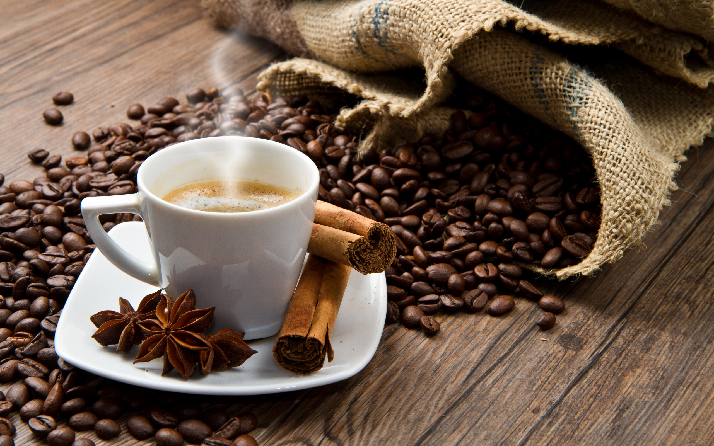
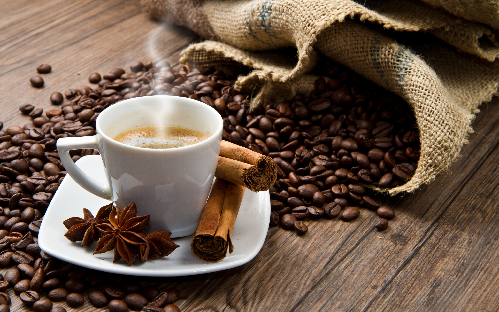
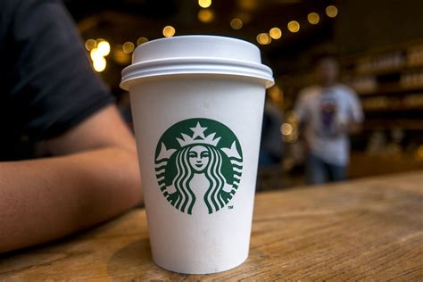
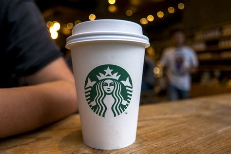

Coffee lovers around the world who reach for their favorite morning brew probably aren’t thinking about its health benefits or risks. And yet this beverage has been subject to a long history of debate. In 1991 coffee was included in a list of possible carcinogens by the World Health Organization. By 2016 it was exonerated, as research found that the beverage was not associated with an increased risk of cancer; on the contrary, there was a decreased risk of certain cancers among those who drink coffee regularly once smoking history was properly accounted for. Additional accumulating research suggests that when consumed in moderation, coffee can be considered a healthy beverage. Why then in 2018 did one U.S. state pass legislation that coffee must bear a cancer warning label? Read on to explore the complexities of coffee.
 

 
